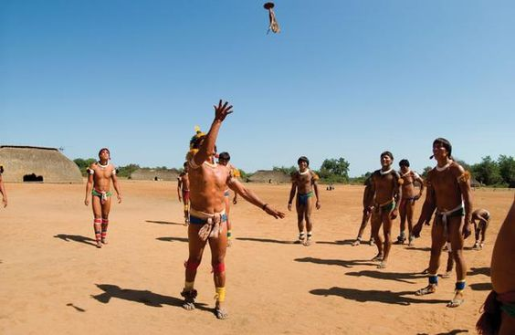

Peteca Oficial Offside. Material: Borracha, Penas de Peru.
Dimensões da embalagem: 30 x 12 x 5 cm;
40 g
R$ 20,00
KENANLAN Petecas Badminton, Neoprene Mão Peteca Praia Entretenimento Indiaca Featherball Hand
Badminton. A base é feita de borracha multicamadas de alta densidade ecológica e tem melhor elasticidade.
22 Cm
R$ 30,00
A Peteca modelo oficial, conta com amortecedor para um toque macio e marcador branco para melhor
visualização noturna.Características:Confeccionada em base emborrachada com penas sintéticasConta com
marcador branco que facilita a visualizar em jogos noturnos.Amortecedor que possibilita um toque mais macio.
10 Cm
R$ 30,00
A peteca é um jogo tradicional que tem suas raízes na cultura brasileira, embora variações do jogo sejam encontradas em várias partes do mundo. O jogo envolve uma peteca, uma espécie de volante, que é golpeada no ar com as mãos ou raquetes em direção ao campo adversário. A peteca é um esporte que combina diversão e habilidade, sendo popular em festas e encontros familiares.
Embora a peteca seja frequentemente jogada por amadores e entusiastas, o esporte não tem uma presença de atletas notáveis em nível internacional como o futebol ou o basquete. No entanto, existem jogadores habilidosos e apaixonados que se destacam nas competições locais e regionais.
Campeonatos de peteca são realizados em muitas regiões do Brasil, com equipes competindo para demonstrar suas habilidades e trabalho em equipe. O esporte é apreciado por sua natureza acessível e descontraída, tornando-o uma ótima opção para todos os níveis de habilidade e idade. Os campeonatos geralmente incluem categorias masculinas e femininas.
